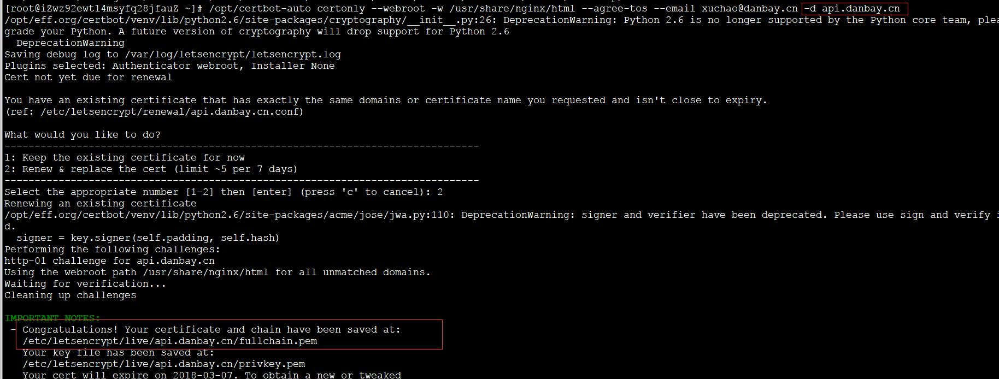
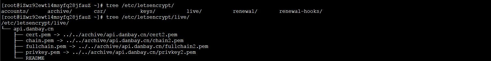

Git 客户端基本配置项Git .gitignoreVIM 基础配置VS Code 基础配置Makefile 模板基于 vsftpd 的 ftp 服务器授权用户访问模式匿名用户访问模式安装配置 Apache Tomcat 9，支持 http2CentOS 配置 VNCCentOS 安装 Python 3.5CentOS 安装 ICECentOS 安装 GCC 4.9.2CentOS 配置 MySQLCentOS 安装 Redis 4.0.9CentOS 安装 SiegeCentOS/Ubuntu 安装 wrkCentOS 安装 pipCentOS 安装 protobuf 3.5.1Ubuntu 安装 vim 8.1zookeeper/kafka 安装配置Gerrit 使用者初始配置gSOAP 2.8.18 安装Nginx 用户认证配置Lets Encrypt 证书制作、部署基础环境证书制作部署Nginx 同时支持 http/httpsNginx 强制启用 httpsNginx 代理 Apache Tomcat更新证书安装配置 CURL 支持 http2安装依赖库安装 Python 2.7.3安装 nghttp2 v1.14.x安装 CURL 7.46.0确认 CURL 版本以及是否支持 http2Mail 发送邮件Windows 下 nodejs /npm 安装配置Windows 下 Git Bash 支持 wget/make/protocwgetmakeprotocVisual Studio Code 配置 GoLang 开发环境Ubuntu 替换源Ubuntu 安装 golang 1.10.3Ubuntu 安装 bitcoinWindows 安装 bitcoin准备编译环境安装依赖库安装 bitcoinWindows 安装 ethereumUbuntu 安装 ethereumUbuntu 安装 luaUbuntu 安装搜狗拼音输入法Ubuntu svn 提交编辑器Ubuntu 禁用 ipv6Ubuntu 设置语言环境为中文Shell 终端提示符设置CentOS 安装 locust 0.8.1
xxxxxxxxxx# 执行方式：命令行执行即可# 提交/检出 不转换git config --global core.autocrlf false# 拒绝提交包含混合换行符的文件git config --global core.safecrlf truegit config --global alias.st statusgit config --global alias.co checkoutgit config --global alias.ct commitgit config --global alias.df diffgit config --global alias.br branchgit config --global color.ui truegit config --global alias.lg "log --color --graph --pretty=format:'%Cred%h%Creset %C(bold blue)<%an>%Creset ---%C(yellow)%d%Creset %s %Cgreen(%cr)' --abbrev-commit"# 指定 vim 作为默认的编辑器git config core.editor vim --globalgit config --global user.name xxgit config --global user.email xx@xxx.cnxxxxxxxxxx# From https://github.com/github/gitignore# Prerequisites*.d# Compiled Object files*.slo*.lo*.o*.obj# Precompiled Headers*.gch*.pch# Compiled Dynamic libraries*.so*.dylib*.dll# Fortran module files*.mod*.smod# Compiled Static libraries*.lai*.la*.a*.lib# Executables*.exe*.out*.app# CMakeCMakeCache.txtCMakeFilesCMakeScriptsTestingMakefilecmake_install.cmakeinstall_manifest.txtcompile_commands.jsonCTestTestfile.cmake# Config*.conf# Loglog/*.log# Generated binary file/directorydebug/release/bin/debugVIM 配置文件位置：~/.vimrc
点此下载：vimrc（下载后重命名为 .vimrc）
xxxxxxxxxxset incsearchset numberset hlsearchset ignorecaseset tabstop=4set shiftwidth=4set softtabstop=4set expandtabset fileencodings=utf-8,gbkset relativenumber " show relative line numberset ruler " show the current line number and column numberset showcmd " show the current typing commandset scrolloff=7 " Set 7 lines to the cursor - when moving vertically using j/kset encoding=utf-8set fileencodings=utf-8,ucs-bom,cp936,gb18030,big5,euc-jp,euc-kr,latin1set helplang=enset termencoding=utf-8set laststatus=2set cursorlineset guifont=Courier_New:h14:cANSIset history=161202set selection=exclusiveset selectmode=mouse,keyset fillchars=vert:\ ,stl:\ ,stlnc:\set showmatchset matchtime=1set linebreakset colorcolumn=100set wrapset tw=100let mapleader = "\<Space>"nmap <Leader><Leader> Vnnoremap <Leader>w :wq!<CR> "save file"nmap <leader><Space><Space> :%s/\s\+$//<CR> "trimTrailingWhitespace"" 自动补全 "" inoremap ( ()<ESC>i<CR><CR><ESC>k" inoremap [ []<ESC>i<CR><CR><ESC>k" inoremap { {}<ESC>i<CR><CR><ESC>k" inoremap " ""<ESC>i" inoremap ' ''<ESC>i" inoremap /* /* */<ESC>iimap jj <ESC>入口：文件 -> 首选项 -> 配置
备注：前两个配置项根据实际情况设置
xxxxxxxxxx{ "go.gopath": "d:\\go", "terminal.integrated.shell.windows": "C:\\Program Files\\Git\\bin\\bash.exe", "editor.wordWrapColumn": 100, "files.eol": "\n", "editor.insertSpaces": true, "editor.tabSize": 4, "files.trimTrailingWhitespace": true, "files.autoSave": "afterDelay", "editor.formatOnSave": true, "editor.formatOnPaste": true, "window.zoomLevel": 2, "explorer.confirmDelete": true, "editor.detectIndentation": true, "team.showWelcomeMessage": false, "python.linting.flake8Enabled": true, "files.autoGuessEncoding": true}xxxxxxxxxxINCLUDES := -I. -I./include -I/opt/Ice-3.5.1/includeLIBS := -Wl,--enable-new-dtags -Wl,-rpath,/opt/Ice-3.5/lib64LIBS += -Wl,-Bstatic -L./lib -lcpp_redis -ltacopieLIBS += -Wl,-Bdynamic -L/opt/Ice-3.5.1/lib64 -lIce -lIceUtilCXX := g++ -std=c++11CXXFLAGS := -rdynamic -m64 -Wall -Wextra -pthread -fPIC -g $(INCLUDES)# 把所有警告当做错误：-Werror，支持 C++ 11：-std=c++11#CXXFLAGS += -Werror -std=c++11TARGETS := serverTARGETS += clientall: $(TARGETS)db.cpp db.h: db.ice slice2cpp $^server: db.o dbi.o server.o $(CXX) -o $@ $^ $(LIBS)client: db.o dbi.o client.o $(CXX) -o $@ $^ $(LIBS)clean: rm -f *.o $(TARGETS)xxxxxxxxxx0. 运行环境：Cent OS 6.8/vsftpd 2.2.21. 安装配置vsftpdyum install vsftpd ftp -ychkconfig vsftpd on2. 添加用户> useradd -d /home/ftp -g ftp -s /sbin/nologin XXXftp -p XXX123!> passwd XXXftp3. 修改配置 /etc/vsftpd/vsftpd.confanonymous_enable=NOlocal_enable=YESwrite_enable=YESlocal_umask=022dirmessage_enable=YESxferlog_enable=YESconnect_from_port_20=YESxferlog_std_format=YESftpd_banner=Welcome to FTP service.listen=YESpam_service_name=vsftpduserlist_enable=YESuserlist_deny=NOtcp_wrappers=YESdownload_enable=YES# 限速 500KBytelocal_max_rate=5000004. 修改配置文件 /etc/vsftpd/user_list# vsftpd userlist# If userlist_deny=NO, only allow users in this file# If userlist_deny=YES (default), never allow users in this file, and# do not even prompt for a password.# Note that the default vsftpd pam config also checks /etc/vsftpd/ftpusers# for users that are denied.#root#bin#daemon#adm#lp#sync#shutdown#halt#mail#news#uucp#operator#games#nobodyXXXftp5. 防火墙开放 21 端口6. 启动服务 service vsftpd start7. 验证> ftp ftp.xxx.cnConnected to ftp.xxx.cn (xxx.xxx.xxx.xxx).220 (vsFTPd 2.2.2)Name (ftp.xxx.cn:kevin): XXXftp331 Please specify the password.Password:230 Login successful.Remote system type is UNIX.Using binary mode to transfer files.xxxxxxxxxx0. 运行环境：Cent OS 6.8/vsftpd 2.2.21. 安装配置vsftpdyum install vsftpd ftp -ychkconfig vsftpd on2. 修改配置文件anonymous_enable=YESlocal_enable=YESlocal_umask=022write_enable=YESdirmessage_enable=YESxferlog_enable=YESchown_uploads=NOxferlog_std_format=YESchroot_local_user=NOlisten=YESuserlist_enable=YESanon_umask=022anon_upload_enable=YESanon_mkdir_write_enable=YESanon_other_write_enable=YESpam_service_name=vsftpdconnect_from_port_20=YEStcp_wrappers=YESpasv_enable=YESpasv_min_port=30000pasv_max_port=310003. 开启防火墙 /etc/sysconfig/iptables-A INPUT -p tcp -m multiport --dport 20,21 -m state --state NEW -j ACCEPT-A INPUT -p tcp -m state --state NEW -m tcp --dport 21 -j ACCEPT-A INPUT -p tcp --dport 30000:31000 -j ACCEPTxxxxxxxxxxPWD=`pwd`ROOT=$PWDecho "install gcc"yum install gcc -yecho "install expect"yum install expect -yecho "yum install curl"yum install curl -yecho "install jdk"tar -zxvf jdk-8u111-linux-x64.tar.gzmv jdk1.8.0_111/ /usr/localcat >> /etc/profile << EOF#add jdk related environment variablesJAVA_HOME=/usr/local/jdk1.8.0_111CLASSPATH=.:\$JAVA_HOME/jre/lib/rt.jar:\$JAVA_HOME/lib/dt.jar:\$JAVA_HOME/lib/tools.jarJRE_HOME=\$JAVA_HOME/jreexport JAVA_HOME=\$JAVA_HOMEexport CLASSPATH=\$CLASSPATHexport JRE_HOME=\$JRE_HOMEexport PATH=\$PATH:\$JAVA_HOME/binEOFecho "set env temporary"JAVA_HOME=/usr/local/jdk1.8.0_111CLASSPATH=.:$JAVA_HOME/jre/lib/rt.jar:$JAVA_HOME/lib/dt.jar:$JAVA_HOME/lib/tools.jarJRE_HOME=$JAVA_HOME/jreexport JAVA_HOME=$JAVA_HOMEexport CLASSPATH=$CLASSPATHexport JRE_HOME=$JRE_HOMEexport PATH=$PATH:$JAVA_HOME/binecho "install apr"tar -xzvf apr-1.5.2.tar.gzcd apr-1.5.2./configure --prefix=/usr/local/aprmake -j4make installcd -rm -rf apr-1.5.2echo "install apr-util"tar -xzvf apr-util-1.5.4.tar.gzcd apr-util-1.5.4./configure --prefix=/usr/local/apr-util --with-apr=/usr/local/aprmake -j4make installcd -rm -rf apr-util-1.5.4echo "install openssl"tar -xzvf openssl-1.0.2h.tar.gzcd openssl-1.0.2h./config shared --prefix=/usr/local/opensslmake dependmake -j4make installcd -rm -rf openssl-1.0.2hecho "install apache tomcat"tar -xzvf apache-tomcat-9.0.0.M17.tar.gzmv apache-tomcat-9.0.0.M17 /usr/localcd /usr/local/apache-tomcat-9.0.0.M17/bintar -xzvf tomcat-native.tar.gzcd tomcat-native-1.2.10-src/native./configure --prefix=/usr/local/native --with-apr=/usr/local/apr --with-ssl=/usr/local/opensslmake -j4make installcat >> /etc/profile << EOF#add native related environment variablesNATIVE_HOME=/usr/local/nativeexport NATIVE_HOME=\$NATIVE_HOMEexport LD_LIBRARY_PATH=\$LD_LIBRARY_PATH:\$NATIVE_HOME/libEOFNATIVE_HOME=/usr/local/nativeexport NATIVE_HOME=$NATIVE_HOMEexport LD_LIBRARY_PATH=$LD_LIBRARY_PATH:$NATIVE_HOME/libecho "gen cert related"mkdir $ROOT/certcd $ROOT/certopenssl genrsa -out server.key 2048openssl rsa -in server.key -out server.keycat > gen_cert.sh << EOFset timeout 30spawn openssl req -new -x509 -key server.key -out ca.crt -days 3650expect { "Country Name (2 letter code)" { send "cn\r"; exp_continue } "State or Province Name (full name)" { send "Guang Dong\r"; exp_continue } "Locality Name (eg, city)" { send "Shen Zhen\r"; exp_continue } "Organization Name (eg, company)" { send "xxx.com\r"; exp_continue } "Organizational Unit Name (eg, section)" { send "Dev\r"; exp_continue } "Common Name (eg, your name or your server's hostname)" { send "stream service\r"; exp_continue } "Email Address" { send "dev@xxx.com\r"; exp_continue }}EOFchmod +x gen_cert.sh./gen_cert.shcd $ROOTcp -r $ROOT/cert/* /usr/local/apache-tomcat-9.0.0.M17/confrm -rf $ROOT/certecho "modify tomcat conf"cat > /usr/local/apache-tomcat-9.0.0.M17/conf/server.xml << EOF<?xml version="1.0" encoding="UTF-8"?><!-- Licensed to the Apache Software Foundation (ASF) under one or more contributor license agreements. See the NOTICE file distributed with this work for additional information regarding copyright ownership. The ASF licenses this file to You under the Apache License, Version 2.0 (the "License"); you may not use this file except in compliance with the License. You may obtain a copy of the License at http://www.apache.org/licenses/LICENSE-2.0 Unless required by applicable law or agreed to in writing, software distributed under the License is distributed on an "AS IS" BASIS, WITHOUT WARRANTIES OR CONDITIONS OF ANY KIND, either express or implied. See the License for the specific language governing permissions and limitations under the License.--><!-- Note: A "Server" is not itself a "Container", so you may not define subcomponents such as "Valves" at this level. Documentation at /docs/config/server.html --><Server port="8005" shutdown="SHUTDOWN"> <Listener className="org.apache.catalina.startup.VersionLoggerListener" /> <!-- Security listener. Documentation at /docs/config/listeners.html <Listener className="org.apache.catalina.security.SecurityListener" /> --> <!--APR library loader. Documentation at /docs/apr.html --> <Listener className="org.apache.catalina.core.AprLifecycleListener" SSLEngine="on" /> <!-- Prevent memory leaks due to use of particular java/javax APIs--> <Listener className="org.apache.catalina.core.JreMemoryLeakPreventionListener" /> <Listener className="org.apache.catalina.mbeans.GlobalResourcesLifecycleListener" /> <Listener className="org.apache.catalina.core.ThreadLocalLeakPreventionListener" /> <!-- Global JNDI resources Documentation at /docs/jndi-resources-howto.html --> <GlobalNamingResources> <!-- Editable user database that can also be used by UserDatabaseRealm to authenticate users --> <Resource name="UserDatabase" auth="Container" type="org.apache.catalina.UserDatabase" description="User database that can be updated and saved" factory="org.apache.catalina.users.MemoryUserDatabaseFactory" pathname="conf/tomcat-users.xml" /> </GlobalNamingResources> <!-- A "Service" is a collection of one or more "Connectors" that share a single "Container" Note: A "Service" is not itself a "Container", so you may not define subcomponents such as "Valves" at this level. Documentation at /docs/config/service.html --> <Service name="Catalina"> <!--The connectors can use a shared executor, you can define one or more named thread pools--> <!-- <Executor name="tomcatThreadPool" namePrefix="catalina-exec-" maxThreads="150" minSpareThreads="4"/> --> <!-- A "Connector" represents an endpoint by which requests are received and responses are returned. Documentation at : Java HTTP Connector: /docs/config/http.html Java AJP Connector: /docs/config/ajp.html APR (HTTP/AJP) Connector: /docs/apr.html Define a non-SSL/TLS HTTP/1.1 Connector on port 8080 --> <Connector port="8080" protocol="HTTP/1.1" connectionTimeout="20000" redirectPort="8443" /> <!-- A "Connector" using the shared thread pool--> <!-- <Connector executor="tomcatThreadPool" port="8080" protocol="HTTP/1.1" connectionTimeout="20000" redirectPort="8443" /> --> <!-- Define a SSL/TLS HTTP/1.1 Connector on port 8443 This connector uses the NIO implementation. The default SSLImplementation will depend on the presence of the APR/native library and the useOpenSSL attribute of the AprLifecycleListener. Either JSSE or OpenSSL style configuration may be used regardless of the SSLImplementation selected. JSSE style configuration is used below. --> <!-- <Connector port="8443" protocol="org.apache.coyote.http11.Http11NioProtocol" maxThreads="150" SSLEnabled="true"> <SSLHostConfig> <Certificate certificateKeystoreFile="conf/localhost-rsa.jks" type="RSA" /> </SSLHostConfig> </Connector> --> <!-- Define a SSL/TLS HTTP/1.1 Connector on port 8443 with HTTP/2 This connector uses the APR/native implementation which always uses OpenSSL for TLS. Either JSSE or OpenSSL style configuration may be used. OpenSSL style configuration is used below. --> <!-- <Connector port="8443" protocol="org.apache.coyote.http11.Http11AprProtocol" maxThreads="150" SSLEnabled="true" > <UpgradeProtocol className="org.apache.coyote.http2.Http2Protocol" /> <SSLHostConfig> <Certificate certificateKeyFile="conf/localhost-rsa-key.pem" certificateFile="conf/localhost-rsa-cert.pem" certificateChainFile="conf/localhost-rsa-chain.pem" type="RSA" /> </SSLHostConfig> </Connector> --> <Connector port="8443" protocol="org.apache.coyote.http11.Http11AprProtocol" maxThreads="150" SSLEnabled="true" > <UpgradeProtocol className="org.apache.coyote.http2.Http2Protocol" /> <SSLHostConfig> <Certificate certificateKeyFile="conf/server.key" certificateFile="conf/ca.crt" type="RSA" /> </SSLHostConfig> </Connector> <!-- Define an AJP 1.3 Connector on port 8009 --> <Connector port="8009" protocol="AJP/1.3" redirectPort="8443" /> <!-- An Engine represents the entry point (within Catalina) that processes every request. The Engine implementation for Tomcat stand alone analyzes the HTTP headers included with the request, and passes them on to the appropriate Host (virtual host). Documentation at /docs/config/engine.html --> <!-- You should set jvmRoute to support load-balancing via AJP ie : <Engine name="Catalina" defaultHost="localhost" jvmRoute="jvm1"> --> <Engine name="Catalina" defaultHost="localhost"> <!--For clustering, please take a look at documentation at: /docs/cluster-howto.html (simple how to) /docs/config/cluster.html (reference documentation) --> <!-- <Cluster className="org.apache.catalina.ha.tcp.SimpleTcpCluster"/> --> <!-- Use the LockOutRealm to prevent attempts to guess user passwords via a brute-force attack --> <Realm className="org.apache.catalina.realm.LockOutRealm"> <!-- This Realm uses the UserDatabase configured in the global JNDI resources under the key "UserDatabase". Any edits that are performed against this UserDatabase are immediately available for use by the Realm. --> <Realm className="org.apache.catalina.realm.UserDatabaseRealm" resourceName="UserDatabase"/> </Realm> <Host name="localhost" appBase="webapps" unpackWARs="true" autoDeploy="true"> <!-- SingleSignOn valve, share authentication between web applications Documentation at: /docs/config/valve.html --> <!-- <Valve className="org.apache.catalina.authenticator.SingleSignOn" /> --> <!-- Access log processes all example. Documentation at: /docs/config/valve.html Note: The pattern used is equivalent to using pattern="common" --> <Valve className="org.apache.catalina.valves.AccessLogValve" directory="logs" prefix="localhost_access_log" suffix=".txt" pattern="%h %l %u %t "%r" %s %b" /> </Host> </Engine> </Service></Server>EOFecho "start tomcat"cd /usr/local/apache-tomcat-9.0.0.M17/bin./startup.shsleep 5echo "test tomcat"curl -k -I https://localhost:8443echo "stop tomcat"cd /usr/local/apache-tomcat-9.0.0.M17/bin./shutdown.shecho ""echo "ATTENTION: RUN 'source /etc/profile'"echo ""安装软件包
yum install tigervnc* -y
修改 /root/.vnc/xstartup 文件，包括注释、新增，如下所示
# xterm -geometry 80x24+10+10 -ls -title "VNCDESKTOP Desktop" &
# twm &
gnome-session &
修改 /etc/sysconfig/vncservers，修改如下行
VNCSERVERARGS[1]="-geometry 1360x768"
配置防火墙，允许默认端口 5901（或者，关闭防火墙）
启动服务
service vncserver start
安装客户端，并连接
客户端连接服务器信息 VNC Server: xxx.xxx.xxx.xxx:5901
xxx.xxx.xxx.xxx 为 VNC Server 的 IP 地址
其他命令
xxxxxxxxxx1. CentOS 6.8 安装 Python 的依赖包yum groupinstall "Development tools"yum install zlib-devel bzip2-devel openssl-devel ncurses-devel sqlite-devel readline-devel tk-devel gdbm-devel db4-devel libpcap-devel xz-devel2. 下载 Python3.5 的源码包并编译wget https://www.python.org/ftp/python/3.5.0/Python-3.5.0.tgztar xf Python-3.5.0.tgzcd Python-3.5.0./configure --prefix=/usr/local --enable-sharedmakemake installln –s /usr/local/bin/python3 /usr/bin/python33. 在运行 Python 之前需要配置库echo /usr/local/lib >> /etc/ld.so.conf.d/local.confldconfig4. 运行演示python3 --versionPython 3.5.05. 删除编译 Python 时所需要的库（可不删除）yum groupremove "Development tools" --remove-leaveasyum remove zlib-devel bzip2-devel openssl-devel ncurses-devel sqlite-devel readline-devel tk-devel gdbm-devel db4-devel libpcap-devel xz-devel --remove-leaves6. 设置别名方便使用alias py=python3xxxxxxxxxx1.下载 Ice 源码cd /optwget http://www.zeroc.com/download/Ice/3.5/Ice-3.5.1.tar.gzwget http://www.zeroc.com/download/Ice/3.5/ThirdParty-Sources-3.5.1.tar.gz2. 安装依赖库yum -y install gcc gcc-c++ expat-devel bzip2 bzip2-develyum -y install openssl*2.1 安装第三方资源tar xvf ThirdParty-Sources-3.5.1.tar.gzcd ThirdParty-Sources-3.5.1tar xvf mcpp-2.7.2.tar.gzcd mcpp-2.7.2patch -p0 < ../mcpp/patch.mcpp.2.7.2./configure CFLAGS=-fPIC --enable-mcpplib --disable-sharedmake && make installcd ../2.2 安装 BerkeleyDBtar zxf db-5.3.21.NC.tar.gzcd db-5.3.21.NCpatch -p0 < ../db/patch.db.5.3.21cd build_unix../dist/configure --prefix=/usr --enable-cxxmake && make install（说明：db 的默认安装 prefix 路径是：/usr/local/BerkeleyDB.5.3，需要改为 /usr，否则 make Ice 时会找不到路径）3. 安装 ICEcd /opttar xvf Ice-3.5.1.tar.gzcd Ice-3.5.1/cppmake && make install4. 环境变量设置（vim /etc/profile）#add ice install dir to path for all usersICE_HOME=/opt/Ice-3.5.1export LD_LIBRARY_PATH=$LD_LIBRARY_PATH:$ICE_HOME/lib:$ICE_HOME/lib64export PATH=$PATH:$ICE_HOME/bin注意：GCC 4.8.1 支持 C++11 全部特性
xxxxxxxxxx1. 下载 GCC 的源码包 gcc-4.9.2.tar.gz，以及三个依赖的安装包，依赖包的版本及其下载地址在 GCC 源码包目录 gcc-4.9.2/contrib/download_prerequisites 脚本文件中有指明。 ftp://ftp.gnu.org/gnu/gmp/gmp-4.3.2.tar.bz2 http://www.mpfr.org/mpfr-2.4.2/mpfr-2.4.2.tar.bz2 http://www.multiprecision.org/mpc/download/mpc-0.8.1.tar.gz 备用下载地址：http://ftp.vim.org/languages/gcc/infrastructure/2. 编译、安装依赖包2.1 安装 gmp-4.3.2 cd gmp-4.3.2 mkdir build && cd build ../configure --prefix=/usr/local/gmp-4.3.2 make -j4 make install2.2 安装 mpfr cd mpfr-2.4.2 mkdir build && cd build ../configure --prefix=/usr/local/mpfr-2.4.2 --with-gmp=/usr/local/gmp-4.3.2 make -j4 make install2.3 安装 mpc cd mpc-0.8.1 mkdir build && cd build ../configure --prefix=/usr/local/mpc-0.8.1 --with-gmp=/usr/local/gmp-4.3.2 --with-mpfr=/usr/local/mpfr-2.4.2 make -j4 make install2.4 在 /etc/profile 添加环境变量 GCC_RELATED_LIBS=/usr/local/gmp-4.3.2/lib:/usr/local/mpfr-2.4.2/lib:/usr/local/mpc-0.8.1/lib export LD_LIBRARY_PATH=$LD_LIBRARY_PATH:$GCC_RELATED_LIBS3. 安装 GCC cd gcc-4.9.2 mkdir build && cd build ../configure --prefix=/usr/local/gcc-4.9.2 --enable-threads=posix --disable-checking --disable-multilib --enable-languages=c,c++ --with-gmp=/usr/local/gmp-4.3.2 --with-mpfr=/usr/local/mpfr-2.4.2 --with-mpc=/usr/local/mpc-0.8.1 make -j4 make install
- 主要包括配置防火墙、修改初始密码、允许远程访问三部分
- MySQL 配置文件位置： /etc/my.cnf
xxxxxxxxxx/sbin/iptables -I INPUT -p tcp --dport 3306 -j ACCEPT/etc/rc.d/init.d/iptables savexxxxxxxxxxmysql -uroot -p123456（初始密码为空）> use mysql;> update user set password=password('123456') where user='root';> flush privileges;xxxxxxxxxx> grant all privileges on *.* to 'root'@'%' identified by '123456' with grant option;xxxxxxxxxxwget http://download.redis.io/releases/redis-4.0.9.tar.gztar -xzvf redis-4.0.9.tar.gzcd redis-4.0.9make -j4# 测试，可跳过make testmake install# 拷贝默认配置文件mkdir -p /etc/rediscp sentinel.conf redis.conf /etc/redis/Redis server/cluster 对应的配置文件 redis.conf
Redis Sentinel 对应的配置文件 sentinel.conf
xxxxxxxxxx# 默认只监听 127.0.0.1:6379，一般情况下，需要添加外网监听bind 127.0.0.1 192.168.2.99protected-mode yesport 6379tcp-backlog 511timeout 0tcp-keepalive 300daemonize yessupervised nopidfile /var/run/redis.pidloglevel noticelogfile /var/log/redis.logdatabases 16always-show-logo yessave 900 1save 300 10save 60 10000stop-writes-on-bgsave-error yesrdbcompression yesrdbchecksum yesdbfilename dump.rdbdir /var/lib/redisslave-serve-stale-data yesslave-read-only yesrepl-diskless-sync norepl-diskless-sync-delay 5repl-disable-tcp-nodelay noslave-priority 100lazyfree-lazy-eviction nolazyfree-lazy-expire nolazyfree-lazy-server-del noslave-lazy-flush noappendonly noappendfilename "appendonly.aof"appendfsync everysecno-appendfsync-on-rewrite noauto-aof-rewrite-percentage 100auto-aof-rewrite-min-size 64mbaof-load-truncated yesaof-use-rdb-preamble nolua-time-limit 5000slowlog-log-slower-than 10000slowlog-max-len 128latency-monitor-threshold 0notify-keyspace-events ""hash-max-ziplist-entries 512hash-max-ziplist-value 64list-max-ziplist-size -2list-compress-depth 0set-max-intset-entries 512zset-max-ziplist-entries 128zset-max-ziplist-value 64hll-sparse-max-bytes 3000activerehashing yesclient-output-buffer-limit normal 0 0 0client-output-buffer-limit slave 256mb 64mb 60client-output-buffer-limit pubsub 32mb 8mb 60hz 10aof-rewrite-incremental-fsync yesxxxxxxxxxxredis_server /etc/redis/redis.confxxxxxxxxxx[root@localhost ~]# redis-cli127.0.0.1:6379> pingPONG127.0.0.1:6379> set name kevinOK127.0.0.1:6379> get name"kevin"127.0.0.1:6379> exitSiege 是 linux 下的一个 web 系统的压力测试工具，支持多链接，支持 get 和 post 请求，可以对 web 系统进行多并发下持续请求的压力测试。
xxxxxxxxxxwget http://download.joedog.org/siege/siege-latest.tar.gztar -xzvf siege-latest.tar.gz# 根据实际情况切换目录cd siege-4.0.4/./configuremake -j4make install一个简单的 http benchmark 工具，能做很多基本的 http 性能测试，wrk 能用很少的线程压出很大的并发量。
xxxxxxxxxxgit clone https://github.com/wg/wrk.gitcd wrkmake -jxxxxxxxxxx# 安装 Python 2.7.4# 安装 setuptoolswget --no-check-certificate https://pypi.python.org/packages/source/s/setuptools/setuptools-1.4.2.tar.gz# 解压:tar -xvf setuptools-1.4.2.tar.gzcd setuptools-1.4.2# 使用 Python 2.7.4 安装 setuptoolspython setup.py install# 安装 pipcurl https://bootstrap.pypa.io/get-pip.py | python2.7 -# 确认安装[root@localhost~]# pip -Vpip 10.0.1 from /usr/local/lib/python2.7/site-packages/pip (python 2.7)xxxxxxxxxx# 墙内需要找其他下载源wget https://github.com/google/protobuf/releases/download/v3.5.1/protobuf-cpp-3.5.1.tar.gztar -xzvf protobuf-cpp-3.5.1.tar.gzcd protobuf-3.5.1/./configure --prefix=/usrmake -j4make installx
# 安装依赖库apt-get install libncurses5-dev libncursesw5-dev# 下载解压curl -O http://ftp.vim.org/vim/unix/vim-8.1.tar.bz2bzip2 -d vim-8.1.tar.bz2tar -xvf vim-8.1.tar# 编译、安装cd vim81./configuremake -j4make install# 覆盖老版本cp /usr/local/bin/vim /usr/bin/vimxxxxxxxxxxzookeeper-3.4.6 安装配置0. 设置机器名 hostname XXX1. 修改 /etc/hosts 192.168.2.2 master 192.168.2.3 node1 192.168.2.4 node22. 做 三台主机 master/node1/node2 之间的机器互信 2.1 每台机器执行 ssh-keygen -t rsa -P '' #产生密钥对 2.2 将2.1中三个公钥写入authorized_keys #~/.ssh/id_rsa.pub >> authorized_keys 2.3 将2.2中authorized_keys拷贝到每台机器~/.ssh3. 下载 zookeeper-3.4.6 wget http://mirrors.hust.edu.cn/apache/zookeeper/zookeeper-3.4.6/zookeeper-3.4.6.tar.gz4. 解压，添加环境变量 /etc/profile export ZOOKEEPER_HOME=/app/zookeeper-3.4.6 export PATH=$PATH:$ZOOKEEPER_HOME5. 配置/app/zookeeper-3.4.6/zoo.cfg# The number of milliseconds of each ticktickTime=2000# The number of ticks that the initial# synchronization phase can takeinitLimit=10# The number of ticks that can pass between# sending a request and getting an acknowledgementsyncLimit=5# the directory where the snapshot is stored.# do not use /tmp for storage, /tmp here is just# example sakes.dataDir=/app/zookeeper-3.4.6/snapshotdataLogDir=/app/zookeeper-3.4.6/log# the port at which the clients will connectclientPort=2181# the maximum number of client connections.# increase this if you need to handle more clients#maxClientCnxns=60## Be sure to read the maintenance section of the# administrator guide before turning on autopurge.## http://zookeeper.apache.org/doc/current/zookeeperAdmin.html#sc_maintenance## The number of snapshots to retain in dataDir#autopurge.snapRetainCount=3# Purge task interval in hours# Set to "0" to disable auto purge feature#autopurge.purgeInterval=1server.1=master:2888:3888server.2=node1:2888:3888server.3=node2:2888:38886. 配置 /app/zookeeper-3.4.6/snapshot/myid（备注：创建myid：在zoo.cfg配置文件中的 dataDir 的目录下面创建 myid，每个节点myid要求不一样）master：echo 1 > /app/zookeeper-3.4.6/snapshot/myidnode1: echo 2> /app/zookeeper-3.4.6/snapshot/myidnode2: echo 3 > /app/zookeeper-3.4.6/snapshot/myid7. 启动 ./bin/zkServer.sh startJMX enabled by defaultUsing config: /app/zookeeper-3.4.6/bin/../conf/zoo.cfgStarting zookeeper ... STARTED8. 查看 zookeeper 节点状态[root@localhost bin]# ./zkServer.sh statusJMX enabled by defaultUsing config: /app/zookeeper-3.4.6/bin/../conf/zoo.cfgMode: leaderkafka 安装配置1. 下载 wget http://mirrors.cnnic.cn/apache/kafka/0.10.0.0/kafka_2.11-0.10.0.0.tgz2. 配置config/server.properties# Licensed to the Apache Software Foundation (ASF) under one or more# contributor license agreements. See the NOTICE file distributed with# this work for additional information regarding copyright ownership.# The ASF licenses this file to You under the Apache License, Version 2.0# (the "License"); you may not use this file except in compliance with# the License. You may obtain a copy of the License at## http://www.apache.org/licenses/LICENSE-2.0## Unless required by applicable law or agreed to in writing, software# distributed under the License is distributed on an "AS IS" BASIS,# WITHOUT WARRANTIES OR CONDITIONS OF ANY KIND, either express or implied.# See the License for the specific language governing permissions and# limitations under the License.# see kafka.server.KafkaConfig for additional details and defaults############################# Server Basics ############################## The id of the broker. This must be set to a unique integer for each broker.broker.id=0############################# Socket Server Settings ############################## The address the socket server listens on. It will get the value returned from# java.net.InetAddress.getCanonicalHostName() if not configured.# FORMAT:# listeners = security_protocol://host_name:port# EXAMPLE:# listeners = PLAINTEXT://your.host.name:9092listeners=PLAINTEXT://master:9092# Hostname and port the broker will advertise to producers and consumers. If not set,# it uses the value for "listeners" if configured. Otherwise, it will use the value# returned from java.net.InetAddress.getCanonicalHostName().#advertised.listeners=PLAINTEXT://your.host.name:9092# The number of threads handling network requestsnum.network.threads=3# The number of threads doing disk I/Onum.io.threads=8# The send buffer (SO_SNDBUF) used by the socket serversocket.send.buffer.bytes=102400# The receive buffer (SO_RCVBUF) used by the socket serversocket.receive.buffer.bytes=102400# The maximum size of a request that the socket server will accept (protection against OOM)socket.request.max.bytes=104857600############################# Log Basics ############################## A comma seperated list of directories under which to store log fileslog.dirs=/app/kafka_2.11-0.10.0.0/kafka-logs# The default number of log partitions per topic. More partitions allow greater# parallelism for consumption, but this will also result in more files across# the brokers.num.partitions=1# The number of threads per data directory to be used for log recovery at startup and flushing at shutdown.# This value is recommended to be increased for installations with data dirs located in RAID array.num.recovery.threads.per.data.dir=1############################# Log Flush Policy ############################## Messages are immediately written to the filesystem but by default we only fsync() to sync# the OS cache lazily. The following configurations control the flush of data to disk.# There are a few important trade-offs here:# 1. Durability: Unflushed data may be lost if you are not using replication.# 2. Latency: Very large flush intervals may lead to latency spikes when the flush does occur as there will be a lot of data to flush.# 3. Throughput: The flush is generally the most expensive operation, and a small flush interval may lead to exceessive seeks.# The settings below allow one to configure the flush policy to flush data after a period of time or# every N messages (or both). This can be done globally and overridden on a per-topic basis.# The number of messages to accept before forcing a flush of data to disk#log.flush.interval.messages=10000# The maximum amount of time a message can sit in a log before we force a flush#log.flush.interval.ms=1000############################# Log Retention Policy ############################## The following configurations control the disposal of log segments. The policy can# be set to delete segments after a period of time, or after a given size has accumulated.# A segment will be deleted whenever *either* of these criteria are met. Deletion always happens# from the end of the log.# The minimum age of a log file to be eligible for deletionlog.retention.hours=168# A size-based retention policy for logs. Segments are pruned from the log as long as the remaining# segments don't drop below log.retention.bytes.#log.retention.bytes=1073741824# The maximum size of a log segment file. When this size is reached a new log segment will be created.log.segment.bytes=1073741824# The interval at which log segments are checked to see if they can be deleted according# to the retention policieslog.retention.check.interval.ms=300000############################# Zookeeper ############################## Zookeeper connection string (see zookeeper docs for details).# This is a comma separated host:port pairs, each corresponding to a zk# server. e.g. "127.0.0.1:3000,127.0.0.1:3001,127.0.0.1:3002".# You can also append an optional chroot string to the urls to specify the# root directory for all kafka znodes.zookeeper.connect=master:2181,node1:2181,node2:2181# Timeout in ms for connecting to zookeeperzookeeper.connection.timeout.ms=6000delete.topic.enable=trueauto.leader.rebalance.enable=true3. 启动 nohup ./kafka-server-start.sh ../config/server.properties &Tips: 公司启用 Gerrit 代码审查，作为使用者，例如开发人员，须完成初始配置之后才能使用 Gerrit。
使用 CM 分配的 Gerrit 账号登陆 gerrit WEB 服务器
进入设置（Setting），填写个人邮箱，点击注册邮箱（Register New Mail）
登陆个人邮箱，找到 Gerrit 发送的验证邮件，点击邮件链接进行确认激活
安装 Git 客户端
生成 SSH 公钥（ssh-kengen -t rsa）
备注：如果客户端使用的 openssl 库版本较高而服务器端版本较低，openssl 高版本禁用某些安全性较低的算法，这种情形下，需要在客户端的 .ssh 目录（即，id_rsa.pub所在目录）新建一个文件 config（Windows 下注意去掉后缀），内容如下
xxxxxxxxxxHost 172.13.31.14 KexAlgorithms +diffie-hellman-group1-sha1xxxxxxxxxxunzip gsoap_2.8.18.zipcd gsoap_2.8.18./configure --prefix=/usr/localmake -j4 && make install添加环境变量 /etc/profile
GSOAP=/usr/local/gsoap_2.8.18
PATH=$GSOAP/bin:$ATH
export PATH
source /etc/profile
xxxxxxxxxxhtpasswd -cb push4.passwd.20180531 push4 lucky2018xxxxxxxxxxserver { listen 80; server_name push4.vnay.vn; auth_basic "Restricted"; auth_basic_user_file /usr/local/nginx/conf/push4.passwd.20180531; root /usr/local/vntop/server/push_server/static; index index.html; location /pushserver { proxy_set_header X-Real-IP $remote_addr; proxy_set_header X-Forwarded-For $proxy_add_x_forwarded_for; proxy_set_header Host $http_host; proxy_pass http://10.99.0.4:42290; }}xxxxxxxxxx/usr/local/nginx/sbin/nginx -t/usr/local/nginx/sbin/nginx -s reloadReferences:
xxxxxxxxxxwget https://dl.eff.org/certbot-autochmod a+x certbot-autoxxxxxxxxxx/opt/certbot-auto certonly --webroot -w /usr/share/nginx/html --agree-tos --email xuchao@danbay.cn -d api.danbay.cn
xxxxxxxxxxtree /etc/letsencrypt/live/
xxxxxxxxxx server { listen 80; listen 443; ssl_certificate /etc/letsencrypt/live/api.danbay.cn/fullchain.pem; ssl_certificate_key /etc/letsencrypt/live/api.danbay.cn/privkey.pem; ssl_session_timeout 1d; ssl_session_cache shared:SSL:32m; ssl_session_tickets off; # modern configuration. tweak to your needs. ssl_protocols TLSv1.2; ssl_ciphers 'ECDHE-ECDSA-AES256-GCM-SHA384:ECDHE-RSA-AES256-GCM-SHA384:ECDHE-ECDSA-CHACHA20-POLY1305:ECDHE-RSA-CHACHA20-POLY1305:ECDHE-ECDSA-AES128-GCM-SHA256:ECDHE-RSA-AES128-GCM-SHA256:ECDHE-ECDSA-AES256-SHA384:ECDHE-RSA-AES256-SHA384:ECDHE-ECDSA-AES128-SHA256:ECDHE-RSA-AES128-SHA256'; ssl_prefer_server_ciphers on; server_name api.danbay.cn; root /usr/share/nginx/html; # Load configuration files for the default server block. include /etc/nginx/default.d/*.conf; location / { } error_page 404 /404.html; location = /40x.html { } error_page 500 502 503 504 /50x.html; location = /50x.html { }}xxxxxxxxxxserver { listen 80; listen 443; server_name api.danbay.cn; root /usr/share/nginx/html; ssl on; error_page 497 https://$host:443$uri; #error_page 497 https://$host:443$request_uri?$args; ssl_certificate /etc/letsencrypt/live/dev3.danbay.cn/fullchain.pem; ssl_certificate_key /etc/letsencrypt/live/dev3.danbay.cn/privkey.pem; ssl_session_timeout 1d; ssl_session_cache shared:SSL:32m; ssl_session_tickets off; # modern configuration. tweak to your needs. ssl_protocols TLSv1.2; ssl_ciphers 'ECDHE-ECDSA-AES256-GCM-SHA384:ECDHE-RSA-AES256-GCM-SHA384:ECDHE-ECDSA-CHACHA20-POLY1305:ECDHE-RSA-CHACHA20-POLY1305:ECDHE-ECDSA-AES128-GCM-SHA256:ECDHE-RSA-AES128-GCM-SHA256:ECDHE-ECDSA-AES256-SHA384:ECDHE-RSA-AES256-SHA384:ECDHE-ECDSA-AES128-SHA256:ECDHE-RSA-AES128-SHA256'; ssl_prefer_server_ciphers on; # Load configuration files for the default server block. include /etc/nginx/default.d/*.conf; location / { } error_page 404 /404.html; location = /40x.html { } error_page 500 502 503 504 /50x.html; location = /50x.html { }}xxxxxxxxxxupstream tomcat { server 127.0.0.1:7080;}server { listen 80; listen 443; server_name api.danbay.cn; root /usr/share/nginx/html; ssl on; #error_page 497 https://$host:443$uri?$args; error_page 497 https://$host:443$request_uri; ssl_certificate /etc/letsencrypt/live/api.danbay.cn/fullchain.pem; ssl_certificate_key /etc/letsencrypt/live/api.danbay.cn/privkey.pem; ssl_session_timeout 1d; ssl_session_cache shared:SSL:32m; ssl_session_tickets off; # modern configuration. tweak to your needs. ssl_protocols TLSv1.2; ssl_ciphers 'ECDHE-ECDSA-AES256-GCM-SHA384:ECDHE-RSA-AES256-GCM-SHA384:ECDHE-ECDSA-CHACHA20-POLY1305:ECDHE-RSA-CHACHA20-POLY1305:ECDHE-ECDSA-AES128-GCM-SHA256:ECDHE-RSA-AES128-GCM-SHA256:ECDHE-ECDSA-AES256-SHA384:ECDHE-RSA-AES256-SHA384:ECDHE-ECDSA-AES128-SHA256:ECDHE-RSA-AES128-SHA256'; ssl_prefer_server_ciphers on; # Load configuration files for the default server block. include /etc/nginx/default.d/*.conf; location / { proxy_pass http://tomcat; } error_page 404 /404.html; location = /40x.html { } error_page 500 502 503 504 /50x.html; location = /50x.html { }}xxxxxxxxxx# 证书默认 90 有效，更新不能太频繁，同一域名一周之内最多只能更新5次/opt/certbot-auto renew###基础环境
xxxxxxxxxxyum install -y readline-devel sqlite-devel lz4 lz4-devel gdbm gdbm-devel bzip2 openssl openssl-devel libdbi-devel ncurses-libs zlib-devel _bsddb bz2 dlnghttp2 依赖 Python 2.7.x
xxxxxxxxxx# 下载、安装 Python 2.7.3wget http://python.org/ftp/python/2.7.3/Python-2.7.3.tar.bz2tar -jxvf Python-2.7.3.tar.bz2cd Python-2.7.3./configuremake -j4 allmake install# 修复其他服务（如，YUM）对旧版本 Python 2.6.6 的依赖mv /usr/bin/python /usr/bin/python-2.6.6ln -sf /usr/local/bin/python2.7 /usr/bin/pythonsed -i "s/#\!\/usr\/bin\/python/#\!\/usr\/bin\/python-2.6.6/" /usr/bin/yumCURL 依赖 nghttp2 提供对 http2 的支持，因此，需要先安装 nghttp2
xxxxxxxxxxgit clone https://github.com/tatsuhiro-t/nghttp2.gitcd nghttp2# 默认 master 分支，切换到特定的分支，例如 v1.14.xgit checkout -b v1.14.x origin/v1.14.xautoreconf -iautomakeautoconf./configuremake -j4make installecho '/usr/local/lib' > /etc/ld.so.conf.d/local.confldconfig# 查看 nghttp2[root@localhost curl-7.46.0]# whereis libnghttp2libnghttp2: /usr/local/lib/libnghttp2.a /usr/local/lib/libnghttp2.la /usr/local/lib/libnghttp2.soxxxxxxxxxx# 安装 CURL 7.46.0wget http://curl.haxx.se/download/curl-7.46.0.tar.bz2tar -xvjf curl-7.46.0.tar.bz2cd curl-7.46.0./configure --with-nghttp2=/usr/local --with-sslmake -j4make install# 替换旧版本ln -sf /usr/local/bin/curl /usr/bin/curlxxxxxxxxxx# 查看 CURL 版本以及所有支持的协议、特性[root@localhost curl-7.46.0]# curl --versioncurl 7.46.0 (x86_64-pc-linux-gnu) libcurl/7.46.0 OpenSSL/1.0.1e zlib/1.2.3 nghttp2/1.14.1Protocols: dict file ftp ftps gopher http https imap imaps pop3 pop3s rtsp smb smbs smtp smtps telnet tftpFeatures: IPv6 Largefile NTLM NTLM_WB SSL libz HTTP2 UnixSockets# 如下提示则表明此版本 CURL 支持 http2[root@localhost curl-7.46.0]# curl --http2 -I https://nghttp2.org/HTTP/2.0 200date:Thu, 12 Apr 2018 16:31:22 GMTcontent-type:text/htmllast-modified:Thu, 12 Apr 2018 15:17:17 GMTetag:"5acf787d-19d8"accept-ranges:bytescontent-length:6616x-backend-header-rtt:0.001775strict-transport-security:max-age=31536000server:nghttpxvia:2 nghttpxx-frame-options:SAMEORIGINx-xss-protection:1; mode=blockx-content-type-options:nosniffxxxxxxxxxxset from=xuchao@bigsillybear.com smtp="smtp.bigsillybear.com"set smtp-auth-user="xuchao@bigsillybear.com" smtp-auth-password="HiBigsillybear"set smtp-auth=loginxxxxxxxxxx# 发送主题为 test，邮件正文为 ca.pem 文件内容，包含附件 ca.pem 的邮件到 cloud_dev@bigsillybear.commail -s "test" -a ca.pem cloud_dev@bigsillybear.com < ca.pem# 发送主题为 test，邮件正文为 hello world 的邮件到 cloud_dev@bigsillybear.comecho "hello world"|mail -s "test" cloud_dev@bigsillybear.com说明：使用 Node.js 的 npm 命令需要访问国外的站点，但由于国内网络的问题，可能安装 react-native-cli 的速度会比较慢，甚至完全无法安装，淘宝为国内开发者提供了 npm 镜像服务。
环境：node-v8.11.1-x64/Windows 7 64位旗舰版
xxxxxxxxxx# 安装 nrm 模块，方便我们切换 npm 下载源npm install -g nrm# 安装 npm2npm install -g npm@2# 创建一个名为 cnpm 的安装点，后面我们可以使用这个安装点从淘宝提供的 npm 镜像站点安装 React Nativenpm install -g cnpm --registry=https://registry.npm.taobao.org# npm 后接参数的命令都可以把 npm 换为 cnpm 来加快速度，比如安装 react-native-clicnpm install -g react-native-cli下载 exe
解压
将解压后的所有文件拷贝到 Git 安装目录，默认路径 C:\Program Files\Git\mingw64\（需根据 Git 实际安装路径调整，另外，如果某些文件原来此目录已存在，切记不要覆盖，选择跳过即可）
确认配置成功
打开 Git Bash，输入 protoc --version
xxxxxxxxxx$ protoc --versionlibprotoc 3.5.1xxxxxxxxxx$ go versiongo version go1.10.1 windows/amd64安装时勾选添加环境变量，不需要单独添加环境变量；否则，需要新添加环境变量，如下：
计算机（右键）-> 属性 -> 高级系统设置 -> 高级 -> 环境变量 -> 系统变量
- 添加 变量名 GOROOT，值为安装目录，如 C:\app\Go\
- 变量名 Path，追加值 C:\app\Go\bin;
xxxxxxxxxxgo get -u -v github.com/nsf/gocodego get -u -v github.com/rogpeppe/godefgo get -u -v github.com/golang/lint/golintgo get -u -v github.com/lukehoban/go-outlinego get -u -v sourcegraph.com/sqs/goreturnsgo get -u -v golang.org/x/tools/cmd/gorenamego get -u -v github.com/tpng/gopkgsgo get -u -v github.com/newhook/go-symbolsgo get -u -v golang.org/x/tools/cmd/guru# 可选择性下载# protobuf 相关，需要安装 protocgo get -u -v github.com/golang/protobuf/protoc-gen-gogo get -u -v github.com/golang/protobuf/proto# grpcgo get -u -v google.golang.org/grpc请注意大坑：步骤 3 需要墙外操作，F**K
VS Code 支持各种语法，同理，安装对应的插件即可，如，需要支持 C++，安装 C++ 插件即可
环境：Ubuntu 14.04.5 LTS
xxxxxxxxxxsudo cp /etc/apt/sources.list /etc/apt/sources.list.bakxxxxxxxxxxsu -cat > /etc/apt/sources.list << EOFdeb http://mirrors.aliyun.com/ubuntu/ trusty main restricted universe multiversedeb http://mirrors.aliyun.com/ubuntu/ trusty-security main restricted universe multiversedeb http://mirrors.aliyun.com/ubuntu/ trusty-updates main restricted universe multiversedeb http://mirrors.aliyun.com/ubuntu/ trusty-proposed main restricted universe multiversedeb http://mirrors.aliyun.com/ubuntu/ trusty-backports main restricted universe multiversedeb-src http://mirrors.aliyun.com/ubuntu/ trusty main restricted universe multiversedeb-src http://mirrors.aliyun.com/ubuntu/ trusty-security main restricted universe multiversedeb-src http://mirrors.aliyun.com/ubuntu/ trusty-updates main restricted universe multiversedeb-src http://mirrors.aliyun.com/ubuntu/ trusty-proposed main restricted universe multiversedeb-src http://mirrors.aliyun.com/ubuntu/ trusty-backports main restricted universe multiverseEOFapt-get update注意：golang 编译器存在较多 bug，在编译 golang 库时，可能因为编译器本身的 bug 导致编译失败，例如，以太坊源码编译。
xxxxxxxxxxtar -xzvf https://dl.google.com/go/go1.10.3.linux-amd64.tar.gzmv go /usr/localxxxxxxxxxxexport GOROOT=/usr/local/go# 设置 golang 工作空间，根据实际情况修改export GOPATH=/opt/goexport PATH=$GOROOT/bin:$GOPATH/bin:$PATHxxxxxxxxxxsource /etc/profile环境：Ubuntu 14.04.5 LTS
xxxxxxxxxxsudo apt-get install build-essential libtool autotools-dev automake pkg-config libssl-dev libevent-dev bsdmainutils python3 libboost-system-dev libboost-filesystem-dev libboost-chrono-dev libboost-program-options-dev libboost-test-dev libboost-thread-dev software-properties-common -ysudo add-apt-repository ppa:bitcoin/bitcoinsudo apt-get updatesudo apt-get install libdb4.8-dev libdb4.8++-devsudo apt-get install libminiupnpc-dev libzmq3-dev libqt5gui5 libqt5core5a libqt5dbus5 qttools5-dev qttools5-dev-tools libprotobuf-dev protobuf-compiler libqrencode-dev -yxxxxxxxxxxgit clone https://github.com/bitcoin/bitcoin.gitxxxxxxxxxx./autogen.sh./configure配置检查通过，输出的信息大致如下所示。可以看到如下同时编译了钱包、gui
xxxxxxxxxxOptions used to compile and link: with wallet = yes with gui / qt = yes qt version = 5 with qr = yes with zmq = yes with test = yes with bench = yes with upnp = yes use asm = yes sanitizers = debug enabled = no gprof enabled = no werror = no target os = linux build os = CC = gcc CFLAGS = -g -O2 CPPFLAGS = -U_FORTIFY_SOURCE -D_FORTIFY_SOURCE=2 -DHAVE_BUILD_INFO -D__STDC_FORMAT_MACROS CXX = g++ -std=c++11 CXXFLAGS = -Wstack-protector -fstack-protector-all -Wall -Wextra -Wformat -Wvla -Wformat-security -Wno-unused-parameter -g -O2 LDFLAGS = -pthread -Wl,-z,relro -Wl,-z,now -pie ARFLAGS = crxxxxxxxxxxmakemake install环境：Windows 7 Ultimate x64
参考文档：
安装 msys shell（Windows 平台模式 shell 的程序）
从 http://sourceforge.net/projects/mingw/files/Installer/mingw-get-setup.exe/download 下载安装包，安装如下四项：
安装 MinGW-builds 工具链
添加环境变量
将 2 中工具链的目录添加到环境变量 Path，即，追加 C:\mingw32\bin;
验证工具链安装配置正确
xxxxxxxxxx$ gcc -vUsing built-in specs.COLLECT_GCC=C:\mingw32\bin\gcc.exeCOLLECT_LTO_WRAPPER=C:/mingw32/bin/../libexec/gcc/i686-w64-mingw32/4.9.2/lto-wrapper.exeTarget: i686-w64-mingw32Configured with: ../../../src/gcc-4.9.2/configure --host=i686-w64-mingw32 --build=i686-w64-mingw32 --target=i686-w64-mingw32 --prefix=/mingw32 --with-sysroot=/c/mingw492/i686-492-posix-dwarf-rt_v3-rev1/mingw32 --with-gxx-include-dir=/mingw32/i686-w64-mingw32/include/c++ --enable-shared --enable-static --disable-multilib --enable-languages=ada,c,c++,fortran,objc,obj-c++,lto --enable-libstdcxx-time=yes --enable-threads=posix --enable-libgomp --enable-libatomic --enable-lto --enable-graphite --enable-checking=release --enable-fully-dynamic-string --enable-version-specific-runtime-libs --disable-sjlj-exceptions --with-dwarf2 --disable-isl-version-check --disable-cloog-version-check --disable-libstdcxx-pch --disable-libstdcxx-debug --enable-bootstrap --disable-rpath --disable-win32-registry --disable-nls --disable-werror --disable-symvers --with-gnu-as --with-gnu-ld --with-arch=i686 --with-tune=generic --with-libiconv --with-system-zlib --with-gmp=/c/mingw492/prerequisites/i686-w64-mingw32-static --with-mpfr=/c/mingw492/prerequisites/i686-w64-mingw32-static --with-mpc=/c/mingw492/prerequisites/i686-w64-mingw32-static --with-isl=/c/mingw492/prerequisites/i686-w64-mingw32-static --with-cloog=/c/mingw492/prerequisites/i686-w64-mingw32-static --enable-cloog-backend=isl --with-pkgversion='i686-posix-dwarf-rev1, Built by MinGW-W64 project' --with-bugurl=http://sourceforge.net/projects/mingw-w64 CFLAGS='-O2 -pipe -I/c/mingw492/i686-492-posix-dwarf-rt_v3-rev1/mingw32/opt/include -I/c/mingw492/prerequisites/i686-zlib-static/include -I/c/mingw492/prerequisites/i686-w64-mingw32-static/include' CXXFLAGS='-O2 -pipe -I/c/mingw492/i686-492-posix-dwarf-rt_v3-rev1/mingw32/opt/include -I/c/mingw492/prerequisites/i686-zlib-static/include -I/c/mingw492/prerequisites/i686-w64-mingw32-static/include' CPPFLAGS= LDFLAGS='-pipe -L/c/mingw492/i686-492-posix-dwarf-rt_v3-rev1/mingw32/opt/lib -L/c/mingw492/prerequisites/i686-zlib-static/lib -L/c/mingw492/prerequisites/i686-w64-mingw32-static/lib -Wl,--large-address-aware'Thread model: posixgcc version 4.9.2 (i686-posix-dwarf-rev1, Built by MinGW-W64 project)依赖库统一安装到目录 C:\deps
安装 openssl
从 http://www.openssl.org/source/openssl-1.0.1g.tar.gz 下载安装包拷贝到 C:\deps
启动 msys，即，C:\MinGW\msys\1.0\msys.bat)运行这个msys.bat，就会启动一个shell环境，提示符 $
执行如下命令
xxxxxxxxxxcd /c/deps/tar -xvfz openssl-1.0.1l.tar.gzcd openssl-1.0.1l./configure no-zlib no-shared no-dso no-krb5 no-camellia no-capieng no-cast no-cms no-dtls1 no-gost no-gmp no-heartbeats no-idea no-jpake no-md2 no-mdc2 no-rc5 no-rdrand no-rfc3779 no-rsax no-sctp no-seed no-sha0 no-static_engine no-whirlpool no-rc2 no-rc4 no-ssl2 no-ssl3 mingwmake dependmake安装 Berkeley DB
从 http://download.oracle.com/berkeley-db/db-4.8.30.NC.tar.gz 下载安装包并拷贝到 C:\deps
执行如下命令
xxxxxxxxxxcd /c/deps/tar -xvfz db-4.8.30.NC.tar.gzcd db-4.8.30.NC/build_unix../dist/configure --enable-mingw --enable-cxx --disable-shared --disable-replicationmake安装 boost
从 http://sourceforge.net/projects/boost/files/boost/1.57.0/ 下载安装包并解压到 C:\deps
执行如下命令
xxxxxxxxxxcd C/deps/boost_1_57_0./bootstrap.bat mingw./b2 --build-type=complete --with-chrono --with-filesystem --with-program_options --with-system --with-thread toolset=gcc variant=release link=static threading=multi runtime-link=static stage安装 Miniupnpc
从 http://miniupnp.free.fr/files/download.php?file=miniupnpc-1.9.20150206.tar.gz 下载安装包并拷贝到 C:\deps
执行如下命令
xxxxxxxxxxcd C/depstar -xzvf miniupnpc-1.9.20150206.tar.gzcd miniupnpc-1.9.20150206mingw32-make -f Makefile.mingw init upnpc-static安装 protobuf
从 https://github.com/google/protobuf/releases/download/v2.6.1/protobuf-2.6.1.tar.gz 下载安装包并拷贝到 C:\deps
执行如下命令
xxxxxxxxxxtar -xzvf protobuf-2.6.1.tar.gzcd protobuf-2.6.1./configure --disable-sharedmake安装 qrencode
从 http://download.sourceforge.net/libpng/libpng-1.6.16.tar.gz 下载安装包并拷贝到 C:\deps
执行如下命令
xxxxxxxxxxtar -xzvf libpng-1.6.16.tar.gzcd libpng-1.6.16./configure --disable-sharedmakecp .libs/libpng16.a .libs/libpng.a从 http://fukuchi.org/works/qrencode/qrencode-3.4.4.tar.gz 下载安装包并拷贝到 C:\deps
执行如下命令
xxxxxxxxxxtar -xzvf qrencode-3.4.4.tar.gzcd qrencode-3.4.4LIBS="../libpng-1.6.16/.libs/libpng.a ../../mingw32/i686-w64-mingw32/lib/libz.a" \png_CFLAGS="-I../libpng-1.6.16" \png_LIBS="-L../libpng-1.6.16/.libs" \./configure --enable-static --disable-shared --without-tools安装 QT 5
从 http://mirrors.tuna.tsinghua.edu.cn/qt/archive/qt/5.3/5.3.2/submodules/qtbase-opensource-src-5.3.2.7z 下载安装包、解压并拷贝到 C:\Qt\5.3.2
从 http://mirrors.tuna.tsinghua.edu.cn/qt/archive/qt/5.3/5.3.2/submodules/qttools-opensource-src-5.3.2.7z 下载安装包、解压并拷贝到 C:\Qt\qttools-opensource-src-5.3.2
Windows 命令行（CMD）执行如下命令
编译加速：如下编译耗时较长，可通过 mingw32-make -j4 加快编译速度（根据机器实际情况调整参数）
错误处理：出现 'fputs' is not a member of 'std' 编译错误时，在出错的文件所在目录 Makefile.Debug/Makefile.Release 文件，CXXFLAGS 添加编译选项 -std=c++11
xxxxxxxxxxset INCLUDE=C:\deps\libpng-1.6.16;C:\deps\openssl-1.0.1l\includeset LIB=C:\deps\libpng-1.6.16\.libs;C:\deps\openssl-1.0.1lcd C:\Qt\5.3.2configure.bat -release -opensource -confirm-license -static -make libs -no-sql-sqlite -no-opengl -system-zlib -qt-pcre -no-icu -no-gif -system-libpng -no-libjpeg -no-freetype -no-angle -no-vcproj -openssl -no-dbus -no-audio-backend -no-wmf-backend -no-qml-debugmingw32-make -j4set PATH=%PATH%;C:\Qt\5.3.2\bincd C:\Qt\qttools-opensource-src-5.3.2qmake qttools.promingw32-make -j4解压到 C:\
执行如下命令
xxxxxxxxxxcd /c/bitcoin-0.9.4./autogen.shCPPFLAGS="-I/c/deps/db-4.8.30.NC/build_unix \-I/c/deps/openssl-1.0.1l/include \-I/c/deps \-I/c/deps/protobuf-2.6.1/src \-I/c/deps/libpng-1.6.16 \-I/c/deps/qrencode-3.4.4" \LDFLAGS="-L/c/deps/db-4.8.30.NC/build_unix \-L/c/deps/openssl-1.0.1l \-L/c/deps/miniupnpc \-L/c/deps/protobuf-2.6.1/src/.libs \-L/c/deps/libpng-1.6.16/.libs \-L/c/deps/qrencode-3.4.4/.libs" \BOOST_ROOT=/c/deps/boost_1_57_0 \./configure \--disable-upnp-default \--disable-tests \--with-qt-incdir=/c/Qt/5.3.2/include \--with-qt-libdir=/c/Qt/5.3.2/lib \--with-qt-plugindir=/c/Qt/5.3.2/plugins \--with-qt-bindir=/c/Qt/5.3.2/bin \--with-protoc-bindir=/c/deps/protobuf-2.6.1/srcmakestrip src/bitcoin-cli.exestrip src/bitcoind.exestrip src/qt/bitcoin-qt.exe环境：Windows 7 Ultimate x64
xxxxxxxxxxGOPATH=D:\goGOROOT=C:\Go\PATH 添加 %GOROOT%\bin;%GOPATH%\binxxxxxxxxxxcd /d/go/src/github.com/ethereum/go-ethereumgo install ./cmd/geth环境：Ubuntu 14.04.5 LTS
GCC：gcc (Ubuntu 4.8.4-2ubuntu1~14.04.4) 4.8.4
Golang：go version go1.10.3 linux/amd64 （注意：低版本 Golang 编译器存在 bug）
xxxxxxxxxxcd $GOPATH/src/github.com/ethereumgit clone https://github.com/ethereum/go-ethereum.gitxxxxxxxxxxcd go-ethereummake allxxxxxxxxxxroot:go-ethereum# cd build/binroot:bin# lsabigen bootnode clef ethkey evm examples faucet geth p2psim puppeth rlpdump simulations swarm swarm-smoke wnode运行环境：Ubuntu 14.04
xxxxxxxxxxcurl -R -O http://www.lua.org/ftp/lua-5.3.0.tar.gztar -zxf lua-5.3.0.tar.gzcd lua-5.3.0make linux testmake install 修改 ~/.subversion/config 配置项，如下所示
xxxxxxxxxx### Set editor-cmd to the command used to invoke your text editor.### This will override the environment variables that Subversion### examines by default to find this information ($EDITOR,### et al).# editor-cmd = editor (vi, emacs, notepad, etc.)editor-cmd = vixxxxxxxxxx#disable IPv6net.ipv6.conf.all.disable_ipv6 = 1net.ipv6.conf.default.disable_ipv6 = 1net.ipv6.conf.lo.disable_ipv6 = 1xxxxxxxxxxkevin@ubuntu:~$ sudo locale-gen zh_CN.UTF-8kevin@ubuntu:~$ localeLANG=en_US.UTF-8LANGUAGE=LC_CTYPE="en_US.UTF-8"LC_NUMERIC="en_US.UTF-8"LC_TIME="en_US.UTF-8"LC_COLLATE="en_US.UTF-8"LC_MONETARY="en_US.UTF-8"LC_MESSAGES="en_US.UTF-8"LC_PAPER="en_US.UTF-8"LC_NAME="en_US.UTF-8"LC_ADDRESS="en_US.UTF-8"LC_TELEPHONE="en_US.UTF-8"LC_MEASUREMENT="en_US.UTF-8"LC_IDENTIFICATION="en_US.UTF-8"LC_ALL=xxxxxxxxxxkevin@ubuntu:~$ vim ~/.profile# 添加下面内容export LANG="zh_CN.UTF-8"export LC_ALL="zh_CN.UTF-8"xxxxxxxxxxPS1 是 linux 里头的一个默认的环境变量，用来设置命令提示符的环境变量。 \d ：代表日期，格式为 weekday month date，例如："Mon Aug 1" \H ：完整的主机名称。例如：我的机器名称为：fc4.linux，则这个名称就是 fc4.linux \h ：仅取主机的第一个名字，如上例，则为 fc4，.linux 则被省略 \t ：显示时间为 24 小时格式，如：HH：MM：SS \T ：显示时间为 12 小时格式 \A ：显示时间为 24 小时格式：HH：MM \u ：当前用户的账号名称 \v ：BASH 的版本信息 \w ：完整的工作目录名称。家目录会以 ~ 代替 \W ：利用 basename 取得工作目录名称，所以只会列出最后一个目录 \# ：下达的第几个命令 \$ ：提示字符，如果是 root 时，提示符为：# ，普通用户则为：$目标：让 shell 只显示最后一个目录名而不显示完整的路径，并且不显示主机名
修改前
xxxxxxxxxxroot@ibc-VirtualBox:~/chaincode/tmp#修改后
xxxxxxxxxxroot:fabric#locust 是基于 python 的性能测试工具，通过编写 python 代码来完成性能测试的。
xxxxxxxxxxsudo pip install locustio安装包含多个依赖库，大致信息如下所示
xxxxxxxxxxSuccessfully installed Jinja2-2.10 Werkzeug-0.14.1 click-6.7 flask-1.0.2 gevent-1.3.5 greenlet-0.4.14 itsdangerous-0.24 locustio-0.8.1 msgpack-python-0.5.6 pyzmq-17.1.0 six-1.11.0确认 locust 安装成功
xxxxxxxxxx[kevin@iZwz9cynwitmm46uagetmvZ ~]$ locust --version[2018-07-22 17:07:53,502] iZwz9cynwitmm46uagetmvZ/INFO/stdout: Locust 0.8.1[2018-07-22 17:07:53,502] iZwz9cynwitmm46uagetmvZ/INFO/stdout: